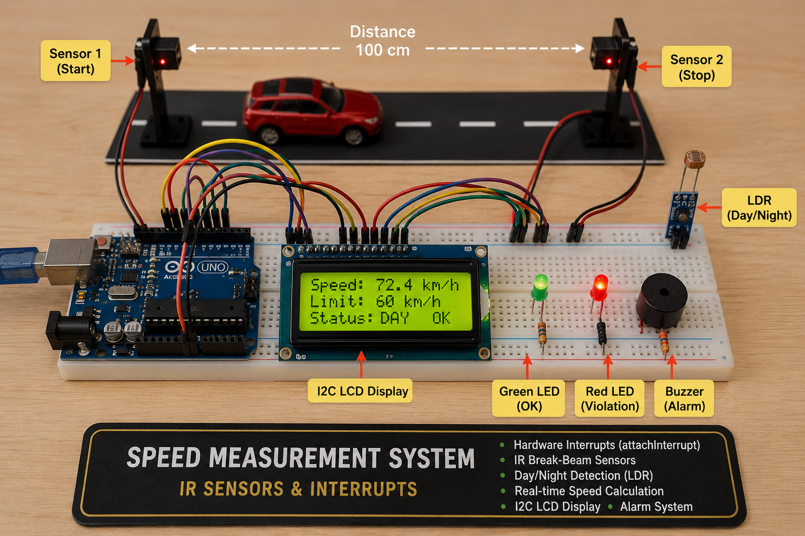

Project 10 — Speed Measurement System: IR Sensors & Interrupts¶
1. What Are We Building?¶
We will build an automatic vehicle speed detection system — the same core principle used in highway speed cameras and traffic management systems.
Two IR break-beam sensors are placed at a known distance apart on a road or track. When a vehicle passes the first sensor, a precise timer starts. When it passes the second sensor, the timer stops. Speed is calculated from distance and elapsed time, then compared against a speed limit that automatically adjusts for day or night (read from an LDR light sensor).
- ✅ Green LED — speed within the limit
- 🔴 Red LED + Buzzer — speed violation detected
- 🖥 I2C LCD — displays measured speed, limit, and day/night status
The highlight of this project is attachInterrupt() — the most precise timing
mechanism available on Arduino, which captures the exact microsecond a sensor
is triggered regardless of what else the program is doing.

2. What Will You Learn?¶
By the end of this project you will be able to:
- Explain what a hardware interrupt is and why it is fundamentally different
from polling (
if (digitalRead(...))) - Use
attachInterrupt(),digitalPinToInterrupt(), and choose the correct trigger mode (RISING, FALLING, CHANGE) - Write an ISR (Interrupt Service Routine) and understand its strict constraints
- Use the
volatilekeyword for variables shared between an ISR andloop()
3. Components Needed¶
Physical Build¶
| Quantity | Component | Notes |
|---|---|---|
| 1 | Arduino Uno | |
| 2 | IR break-beam sensor modules | Transmitter + receiver pairs; OUT goes LOW when beam is broken |
| 1 | LDR (photoresistor) | Light-dependent resistor for day/night detection |
| 1 | 10 kΩ resistor | Pull-down for LDR voltage divider |
| 1 | 16×2 I2C LCD | From Project 07 |
| 1 | Green LED + 220 Ω | Access OK indicator |
| 1 | Red LED + 220 Ω | Violation indicator |
| 1 | Passive buzzer | Violation alarm |
| 1 | Breadboard | |
| Several | Jumper wires |
4. Key Concepts¶
4.1 The Problem with Polling¶
In every project so far, we checked sensor states by polling — repeatedly asking
"is the button pressed? Is the IR triggered?" inside loop():
void loop() {
if (digitalRead(IR1_PIN) == LOW) { // polling — checked ~every few ms
t1 = millis();
}
}
The problem: loop() is not always checking the sensor. Between readings there
is code running — delay() calls, LCD updates, Serial prints — which can take
milliseconds or even seconds. If a fast vehicle passes during that gap, the event
is missed entirely.
For a speed camera that must detect objects moving at 100+ km/h passing a 1 cm sensor gap in under 0.36 ms — polling is completely inadequate.
4.2 Hardware Interrupts — The Solution¶
A hardware interrupt is a signal that temporarily stops whatever the processor is doing and immediately runs a special function called an ISR (Interrupt Service Routine). After the ISR finishes, execution resumes exactly where it left off.
Normal execution: With interrupt:
───────────────── ─────────────────────────────────────
loop() running... loop() running...
lcd.print(...) lcd.pri... ← STOPPED
delay(100)... ↓
analogRead(...) ISR runs immediately!
... t1 = millis(); ← captured precisely
↓
loop() resumes: ...nt(...)
The key advantage: the ISR responds in microseconds, regardless of what
loop() is currently doing — even in the middle of a delay().
4.3 Interrupt Pins on Arduino Uno¶
Arduino Uno has two external interrupt pins:
| Pin | Interrupt Number | digitalPinToInterrupt() |
|---|---|---|
| 2 | INT0 | digitalPinToInterrupt(2) → 0 |
| 3 | INT1 | digitalPinToInterrupt(3) → 1 |
Note
Always use digitalPinToInterrupt(pin) instead of hardcoding the interrupt
number. It works correctly across all Arduino boards — pin 2 maps to interrupt 0 on Uno but may map differently on Mega or Leonardo.
4.4 attachInterrupt() — Registering an ISR¶
| Parameter | Options | Meaning |
|---|---|---|
pin |
2 or 3 on Uno | Which pin to watch |
ISR_function |
your function name | Function to call when triggered |
mode |
RISING |
Trigger when pin goes LOW → HIGH |
FALLING |
Trigger when pin goes HIGH → LOW | |
CHANGE |
Trigger on any state change | |
LOW |
Trigger continuously while pin is LOW |
For our IR sensors (OUTPUT goes LOW when beam is broken):
4.5 Writing an ISR — Strict Rules¶
An ISR is a regular-looking function, but with important constraints:
void onSensor1() {
t1 = millis(); // ✅ OK — millis() works inside ISR (incremented by timer hardware)
sensor1Triggered = true; // ✅ OK — set a flag
}
What you MUST NOT do inside an ISR:
| Forbidden | Why |
|---|---|
delay() |
Uses timer interrupts — blocked during ISR |
Serial.print() |
Uses interrupts internally — will hang or corrupt output |
digitalWrite() for long operations |
ISRs must be as short as possible |
| Complex calculations | ISRs block all other interrupts while running |
The ISR pattern for Arduino:
1. Record the timestamp or set a flag inside the ISR (fast — one or two lines)
2. Do all the heavy work (printing, calculating, displaying) in loop()
4.6 The volatile Keyword¶
When a variable is modified inside an ISR and read in loop(), the compiler
may optimize it away — caching it in a CPU register and never re-reading
it from memory. The ISR updates memory, but loop() keeps seeing the old
cached value.
volatile tells the compiler: "this variable can change at any time — always
read it fresh from memory, never cache it."
volatile unsigned long t1 = 0; // ← volatile: ISR writes, loop() reads
volatile unsigned long t2 = 0;
volatile bool sensor1Triggered = false;
volatile bool sensor2Triggered = false;
Caution
Any variable written inside an ISR and read outside it
must be declared
volatile. Forgetting this causes bugs that appear and disappear seemingly at random.
4.7 Speed Calculation¶
In our system:
- Distance: fixed gap between sensor 1 and sensor 2 (in real world: meters)
- Time: t2 - t1 in milliseconds → convert to seconds (divide by 1000)
- Speed unit: meters/second → convert to km/h (multiply by 3.6)
float timeSec = (t2 - t1) / 1000.0; // ms → seconds
float speedMs = SENSOR_DISTANCE_M / timeSec; // m/s
float speedKmh = speedMs * 3.6; // m/s → km/h
4.8 LDR Voltage Divider for Day/Night Detection¶
The LDR's resistance changes with light. Paired with a fixed resistor in a
voltage divider, it produces a voltage that analogRead() can measure:
- Bright (day): LDR resistance low → voltage at A0 is high (closer to 5V)
- Dark (night): LDR resistance high → voltage at A0 is low (closer to 0V)
int lightLevel = analogRead(LDR_PIN); // 0–1023
bool isDay = (lightLevel > LDR_THRESHOLD);
float limit = isDay ? DAY_LIMIT_KMH : NIGHT_LIMIT_KMH;
Pin Connections¶
| Component | Arduino Pin |
|---|---|
| IR Sensor 1 → OUT | 2 (interrupt pin INT0) |
| IR Sensor 2 → OUT | 3 (interrupt pin INT1) |
| IR Sensor 1 & 2 → VCC | 5V |
| IR Sensor 1 & 2 → GND | GND |
| LDR (one leg) | A0 |
| LDR (other leg) | 5V |
| 10kΩ resistor (between A0 and GND) | A0 → GND |
| LCD SDA | A4 |
| LCD SCL | A5 |
| Green LED (+) | 220Ω → Pin 8 |
| Red LED (+) | 220Ω → Pin 9 |
| Buzzer (+) | Pin 10 |
| All (–) / GND | GND |
5. The Code¶
#include <Wire.h>
#include <LiquidCrystal_I2C.h>
// ── Pin Definitions ──────────────────────────────────────────
const int IR1_PIN = 2; // INT0 — must be pin 2 or 3
const int IR2_PIN = 3; // INT1 — must be pin 2 or 3
const int LDR_PIN = A0;
const int GREEN_LED = 8;
const int RED_LED = 9;
const int BUZZER_PIN = 10;
// ── Measurement Parameters ────────────────────────────────────
const float SENSOR_DISTANCE_M = 3.0; // real-world distance between sensors (m)
const float DAY_LIMIT_KMH = 60.0; // daytime speed limit
const float NIGHT_LIMIT_KMH = 40.0; // nighttime speed limit
const int LDR_THRESHOLD = 500; // 0–1023; above = day, below = night
const unsigned long TIMEOUT_MS = 5000; // reset if vehicle doesn't reach sensor 2 in 5 s
// ── Volatile ISR variables ─────────────────────────────────────
volatile unsigned long t1 = 0;
volatile unsigned long t2 = 0;
volatile bool sensor1Triggered = false;
volatile bool sensor2Triggered = false;
// ── State machine ──────────────────────────────────────────────
enum SystemState { IDLE, MEASURING, RESULT };
SystemState state = IDLE;
// ── LCD ───────────────────────────────────────────────────────
LiquidCrystal_I2C lcd(0x27, 16, 2);
// ═════════════════════════════════════════════════════════════
void setup() {
Serial.begin(9600);
Wire.begin();
lcd.init();
lcd.backlight();
pinMode(IR1_PIN, INPUT);
pinMode(IR2_PIN, INPUT);
pinMode(GREEN_LED, OUTPUT);
pinMode(RED_LED, OUTPUT);
pinMode(BUZZER_PIN, OUTPUT);
// ── Register ISRs ────────────────────────────────────────
attachInterrupt(digitalPinToInterrupt(IR1_PIN), isr_sensor1, FALLING);
attachInterrupt(digitalPinToInterrupt(IR2_PIN), isr_sensor2, FALLING);
showIdle();
Serial.println("=== Speed Measurement System Ready ===");
}
// ═════════════════════════════════════════════════════════════
void loop() {
switch (state) {
// ── IDLE: waiting for a vehicle to break sensor 1 ──────
case IDLE:
if (sensor1Triggered) {
sensor1Triggered = false;
state = MEASURING;
lcd.clear();
lcd.setCursor(0, 0);
lcd.print("Vehicle detected");
lcd.setCursor(0, 1);
lcd.print("Measuring...");
Serial.print("Sensor 1 triggered at: ");
Serial.println(t1);
}
break;
// ── MEASURING: sensor 1 passed, waiting for sensor 2 ───
case MEASURING:
// Check for sensor 2 trigger
if (sensor2Triggered) {
sensor2Triggered = false;
state = RESULT;
Serial.print("Sensor 2 triggered at: ");
Serial.println(t2);
}
// Timeout: vehicle never reached sensor 2
if (millis() - t1 > TIMEOUT_MS) {
Serial.println("Timeout — vehicle did not reach sensor 2.");
state = IDLE;
sensor1Triggered = false;
sensor2Triggered = false;
showIdle();
}
break;
// ── RESULT: both sensors triggered — calculate speed ────
case RESULT: {
float timeSec = (t2 - t1) / 1000.0;
float speedKmh = (SENSOR_DISTANCE_M / timeSec) * 3.6;
bool isDay = (analogRead(LDR_PIN) > LDR_THRESHOLD);
float limit = isDay ? DAY_LIMIT_KMH : NIGHT_LIMIT_KMH;
// Print to Serial Monitor
Serial.print("Time: "); Serial.print(timeSec, 3); Serial.println(" s");
Serial.print("Speed: "); Serial.print(speedKmh, 1); Serial.println(" km/h");
Serial.print("Limit: "); Serial.println(limit);
Serial.print("Day/Night: "); Serial.println(isDay ? "Day" : "Night");
// Display on LCD
displayResult(speedKmh, limit, isDay);
// Wait, then return to IDLE
delay(4000);
state = IDLE;
showIdle();
break;
}
}
}
// ── ISR for sensor 1 — KEEP IT SHORT ─────────────────────────
void isr_sensor1() {
if (state == IDLE) { // Only accept if we are waiting for a new vehicle
t1 = millis();
sensor1Triggered = true;
}
}
// ── ISR for sensor 2 — KEEP IT SHORT ─────────────────────────
void isr_sensor2() {
if (state == MEASURING) { // Only accept if sensor 1 has already been triggered
t2 = millis();
sensor2Triggered = true;
}
}
// ── Display speed result on LCD and drive LEDs/buzzer ─────────
void displayResult(float speedKmh, float limit, bool isDay) {
lcd.clear();
lcd.setCursor(0, 0);
lcd.print("Speed:");
lcd.print(speedKmh, 1);
lcd.print("km/h");
lcd.setCursor(0, 1);
lcd.print(isDay ? "[D]" : "[N]");
lcd.print(" Lim:");
lcd.print(limit, 0);
if (speedKmh > limit) {
lcd.print(" OVER!");
digitalWrite(RED_LED, HIGH);
tone(BUZZER_PIN, 2000);
delay(500); noTone(BUZZER_PIN);
delay(200);
tone(BUZZER_PIN, 2000);
delay(500); noTone(BUZZER_PIN);
digitalWrite(RED_LED, LOW);
Serial.println(">>> VIOLATION DETECTED <<<");
} else {
lcd.print(" OK");
digitalWrite(GREEN_LED, HIGH);
delay(2000);
digitalWrite(GREEN_LED, LOW);
}
}
// ── Show idle / standby screen ────────────────────────────────
void showIdle() {
bool isDay = (analogRead(LDR_PIN) > LDR_THRESHOLD);
float limit = isDay ? DAY_LIMIT_KMH : NIGHT_LIMIT_KMH;
lcd.clear();
lcd.setCursor(0, 0);
lcd.print(isDay ? "[DAY] " : "[NIGHT] ");
lcd.print("Lim:");
lcd.print(limit, 0);
lcd.setCursor(0, 1);
lcd.print("Waiting...");
}
Why the ISR Checks state¶
void isr_sensor1() {
if (state == IDLE) { // ← guard condition
t1 = millis();
sensor1Triggered = true;
}
}
Without the state check, if sensor 1 is vibrating or has electrical noise,
it could re-trigger while we are already measuring — overwriting t1 and
corrupting the measurement. The guard condition makes the ISR only record
data when the system is in the correct state to receive it.
6. Exercises & Challenges¶
Exercise 1 — Serial Speed Log ⭐¶
Every time a speed measurement is completed, print a formatted log entry to the Serial Monitor including a running measurement count:
[001] Time: 0.312 s | Speed: 34.6 km/h | Limit: 60 | Status: OK
[002] Time: 0.150 s | Speed: 72.0 km/h | Limit: 60 | Status: VIOLATION
Hint: Use a global int measurementCount = 0; and increment it in the RESULT state.
Exercise 2 — Rolling Average ⭐⭐¶
Keep the last 5 speed measurements in an array and display the average speed along with the latest reading on the LCD:
Hint: Use a circular buffer — an array of 5 floats with an index that wraps around
using the % modulo operator.
Exercise 3 — Violation Counter with EEPROM ⭐⭐¶
Using what you learned in Project 07: - Store a total violation count in EEPROM - Increment it every time a violation is detected - Display the all-time violation count on the LCD during idle:
The count should survive a power cycle.
Exercise 4 — Speed Categories ⭐⭐¶
Instead of a binary OK / VIOLATION response, define three severity levels:
| Category | Speed (vs limit) | LED | Buzzer |
|---|---|---|---|
| Safe | < 90% of limit | Green solid | Silent |
| Warning | 90–100% of limit | Green blinking | 1 short beep |
| Violation | > 100% of limit | Red solid | 2 long beeps |
Exercise 5 — Wrong-Way Detection ⭐⭐⭐¶
If sensor 2 triggers before sensor 1 (vehicle travelling in the wrong direction),
display "WRONG WAY!" on the LCD and trigger a different alarm pattern.
Hint: Modify isr_sensor2() to also handle the case where state == IDLE —
this means sensor 2 fired first.
Bonus Challenge — micros() for Higher Precision ⭐⭐⭐¶
millis() has 1 ms resolution. At 100 km/h, a vehicle travels 2.78 cm per millisecond.
For sensors 10 cm apart, the travel time is only ~3.6 ms — giving very few milliseconds
to work with and large percentage errors.
Replace millis() with micros() (microsecond resolution) throughout the ISRs
and speed calculation:
volatile unsigned long t1 = 0;
void isr_sensor1() {
if (state == IDLE) {
t1 = micros(); // ← microseconds instead of milliseconds
sensor1Triggered = true;
}
}
// In RESULT state:
float timeSec = (t2 - t1) / 1000000.0; // µs → seconds
Compare readings with millis() vs micros() at the same simulated timing.
How much does precision improve?